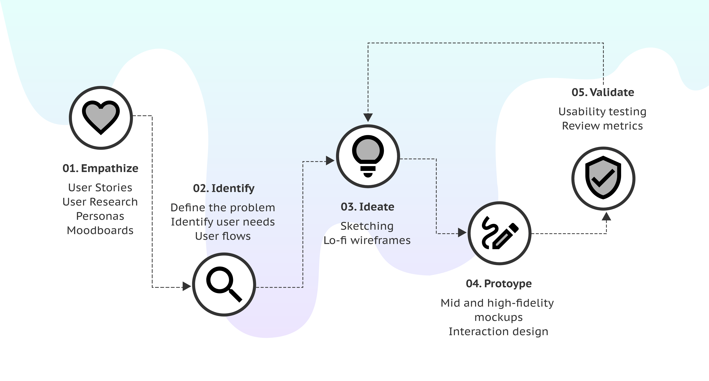
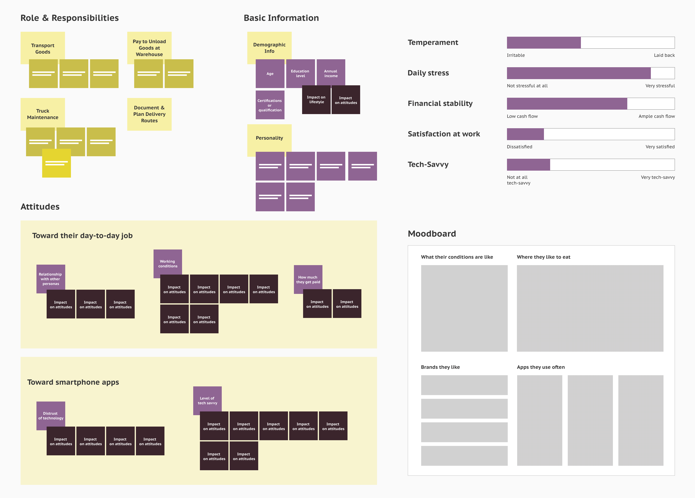
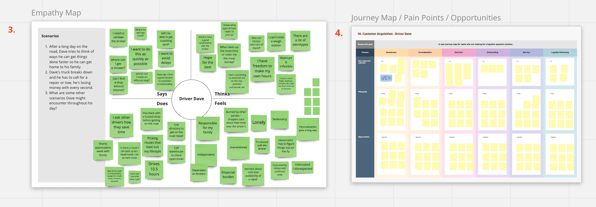
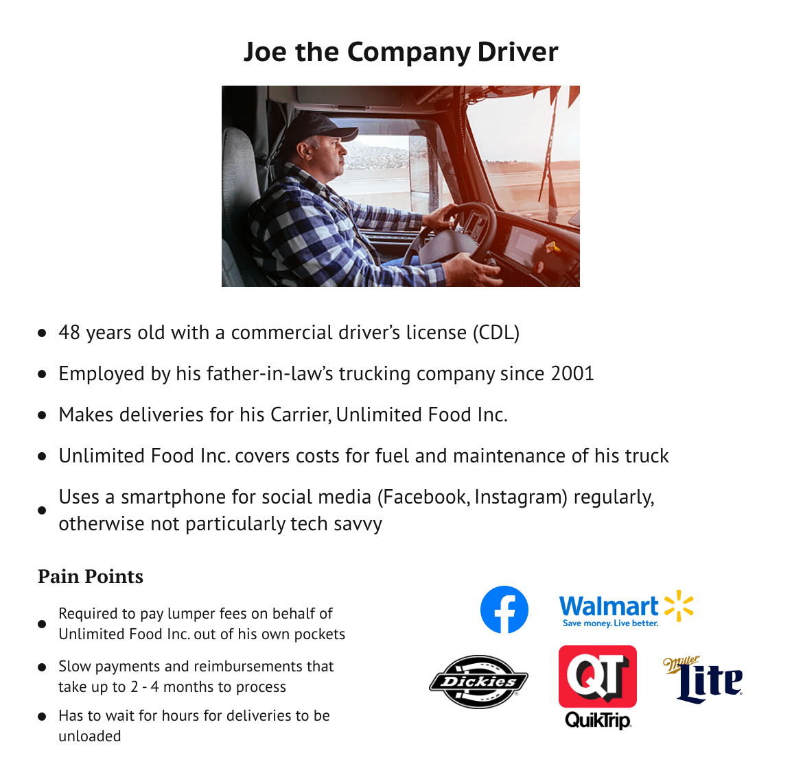
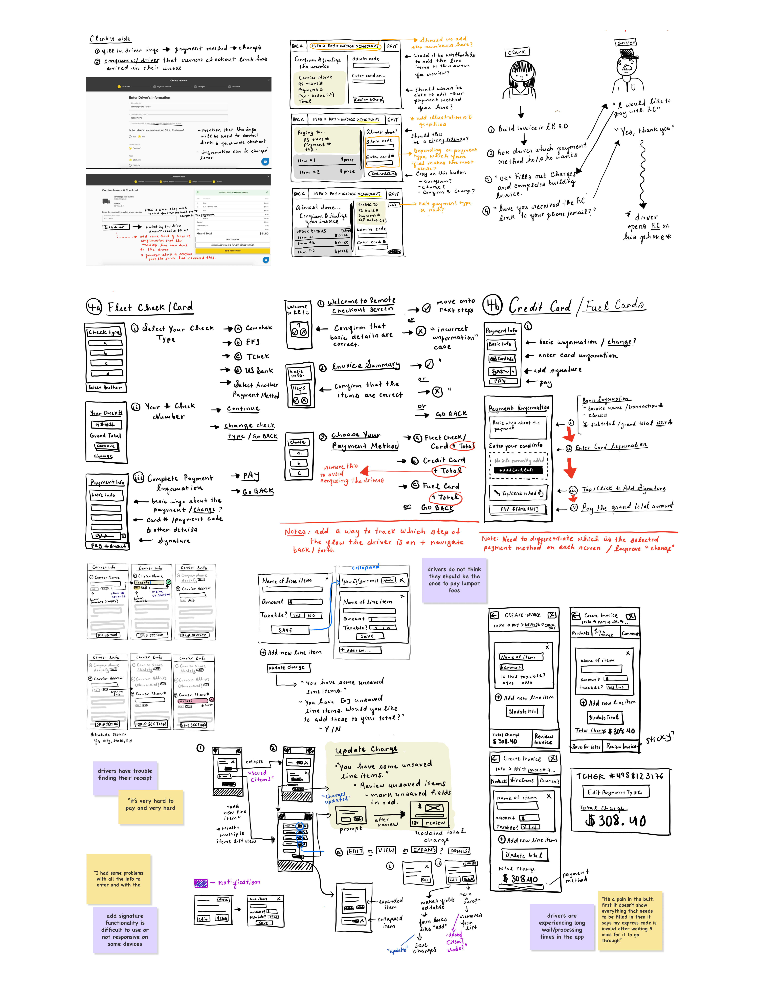
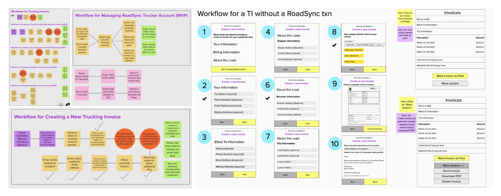
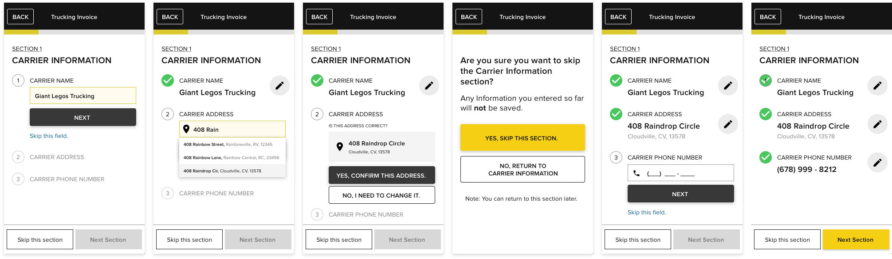
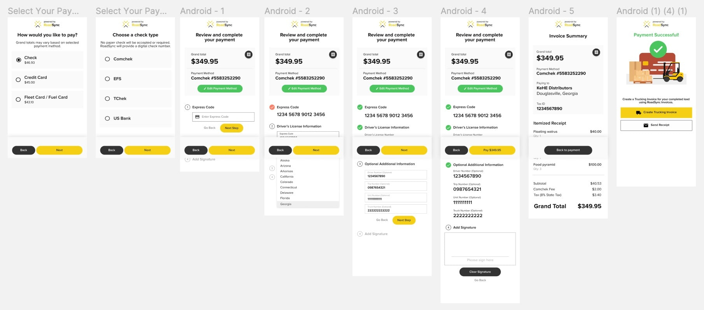
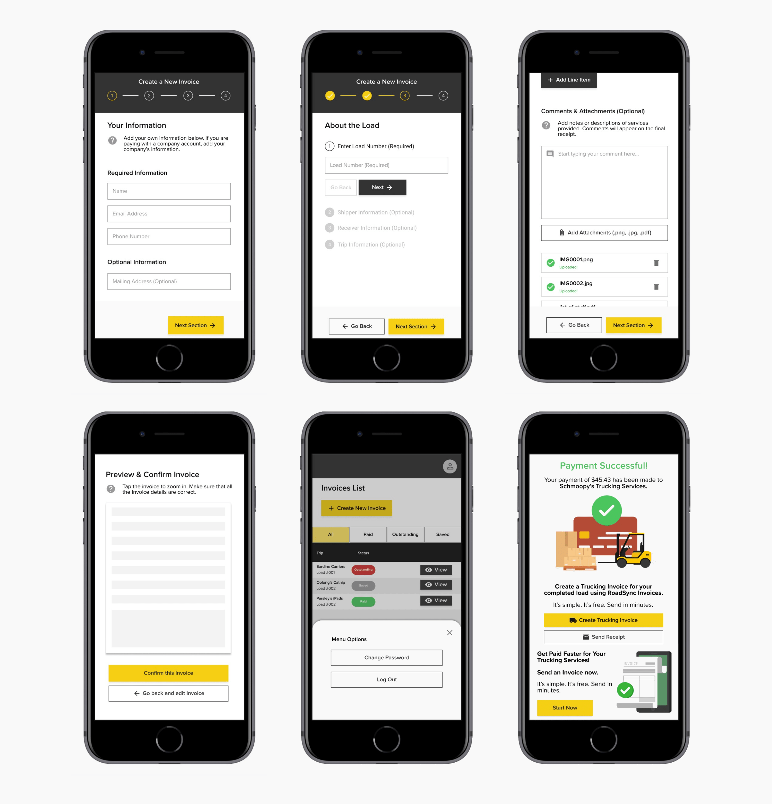

My Design Process
Designing Across 4 Product Offerings
During my time at RoadSync, I worked across the Product, Engineering,
and Marketing teams. In general, my design process varies depended on
the task or team I work with, but I used the following design process
to guide me whenever I felt stuck.

Discovery
Understanding RoadSync's B2B and B2C users.
With so many carriers and warehouses using RoadSync, we saw
opportunity to expand product offerings to truck drivers. Our B2B
users were generating potential B2C users. To deliver the right
products to our users, we needed to understand them as people.
Unfortunately, drivers showed little interest in providing information
about themselves to us. The question now was "How do we get to know
people who don't want to be known?"
Social Media
Blogs, social media, and forums were great resources for general
research and discovery. These sources provided an unfiltered look
into our user base in the wild. Blogs often provided detailed
information about the trucking industry. Social media provided a
somewhat intimate look into their emotions and pain points. Forums
gave us a combination of both.
In-app Surveys
Survey tools like Typeform are helpful in collecting in-app
feedback for products and features. But, often we'd see a one-star
rating accompanied by an expletive with no explanation. Although
it was a good way to collect a lot of quick feedback, we couldn't
use it method to get a detailed reading on our users as human
beings.
Focus Groups
Survey tools like Typeform are helpful in collecting in-app
feedback for products and features. But, often we'd see a one-star
rating accompanied by an expletive with no explanation. Although
it was a good way to collect a lot of quick feedback, we couldn't
use it method to get a detailed reading on our users as human
beings.
Synthesizing qualitative information.
After a while, we had more information than we knew what to do with.
Affinity Maps and Empathy Maps came in handy for us to refer to as we
drafted a few User Personas. From there, we could jump into Journey
Mapping with real, human users in mind.



Designing Solutions
Implementing mobile payments & invoicing for truckers.
Identifying Pain Points
High Lumper Fees
After arriving at the delivery destination (i.e., a warehouse), a
lumper comes out to the dock to unload the contents of a truck.
Although this saves the driver the time and energy it takes to
unload their truck themselves, it can cost them anywhere between
$50-$400 out of pocket.
Messy Paperwork
There are many harsh demands of driving and maintaining a
long-haul truck. Keeping track of loose receipts, invoices, and
other paperwork is an unnecessary hassle on top of that.
Slow Payments & Reimbursements
Payments and reimbursements don't process until after a driver
provides an invoice and proof of delivery.
Early Sketches

Wireframes

High-Fidelity Mockups



×